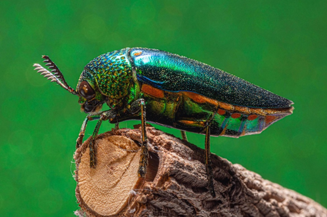

Escarabajo de cuerpo robusto y alargado, con una llamativa coloración verde azulada metálica y reflejos rojizos en los costados. Presenta élitros rugosos y antenas aserradas. Sus larvas se desarrollan dentro de la madera de diferentes árboles.